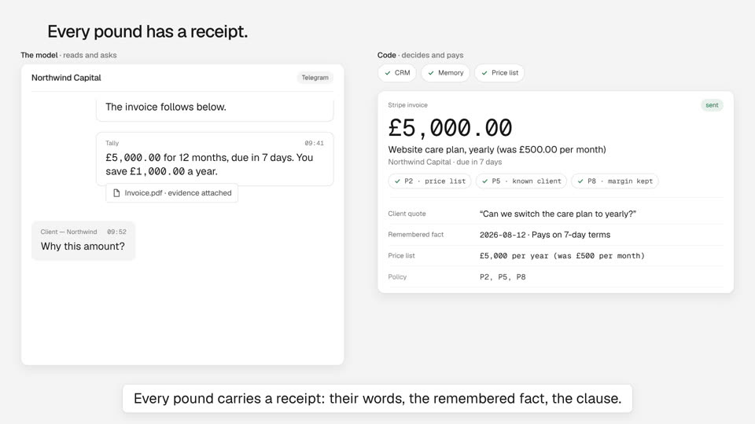

Four directions for the Tally explainer
The one idea is fixed before any of these: a client's chat message becomes a correct invoice while you watch, because the model only reads and asks, and code decides and pays inside a written policy. The directions differ in what the viewer looks at for 75 seconds. Sketches are wireframes; the winner shows real frames from the build.
A · The Thread Winner

The whole film is one chat thread. The back office (CRM, memory, price list, policy, the Stripe invoice, the staff note) docks beside it as the agent works, in the order the code runs. The thread scrolls as the case develops; the invoice flips open to its evidence page when the client asks why.
- Shows the real thing: the conversation is the product surface, so the hook ("no form, no dashboard") is demonstrated, not claimed.
- Objects stay alive: the message becomes the quote on the invoice; the three recall cards become three checks; the invoice grows its receipt.
- The split gets a name as two column headers that stay on screen.
Risk: text-heavy. Answered with one focal action at a time, anchors of at most eight words, and the camera holding still while text is read.
B · Two Queues Cut
Split screen: the chat on the left, the finance dashboard on the right, the dashboard filling itself in while nobody touches it.
- Gives half the frame to the thing the film says you no longer need; the viewer watches the dashboard and learns the wrong lesson.
- Support and finance stay two queues on screen, which is the belief we are trying to replace.
C · The Receipt Folded into A
The film is an invoice PDF building itself line by line, with the chat as the source of each line and the policy clause stamped on each.
- Strongest on "every pound explained", weakest on the hook: the message-first moment and the order of events are lost.
- Kept as the Receipt beat (42 to 50 s) inside A, where the invoice grows its evidence page.
D · The Spine Cut
An animated systems diagram: adapters, ledger, memory, policy, Stripe, with one message travelling the spine and the human gate drawn as a valve.
- Accurate and clean, but abstract: it breaks "prefer real UI, real data and clean diagrams over illustration" for the whole film instead of for one beat.
- Its one useful part, naming the split, survives as A's two column headers.
Why A
Go wide, then decide: B contradicts the idea, D abstracts it, C explains the receipt but not the request. A is the only direction where the opening image (a client message) can return at the end read correctly, which the story arc asks for, and the only one where every object on screen is something the code actually produces. C's evidence page and D's naming of the split were folded in. Palette, type and spacing are the brand tokens; one accent (#1D6F42) marks where code acted. Restraint cuts: no lead sourcing, no subscriptions adapter, no vendor names, no live-run figures, no particles, no gradients.